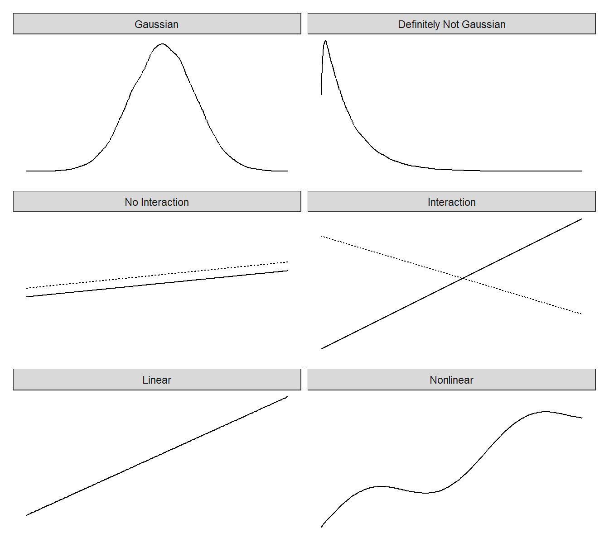
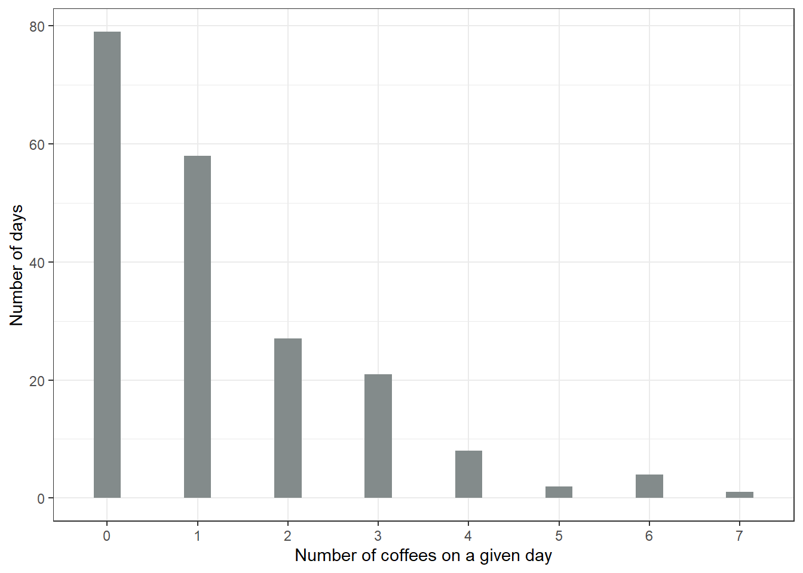
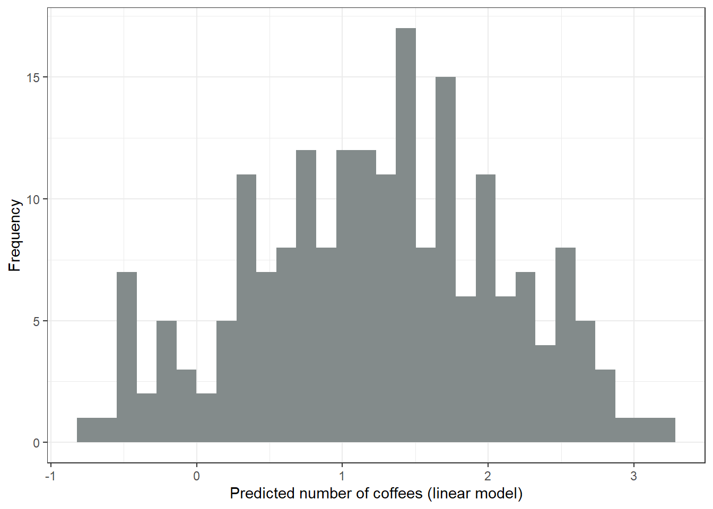
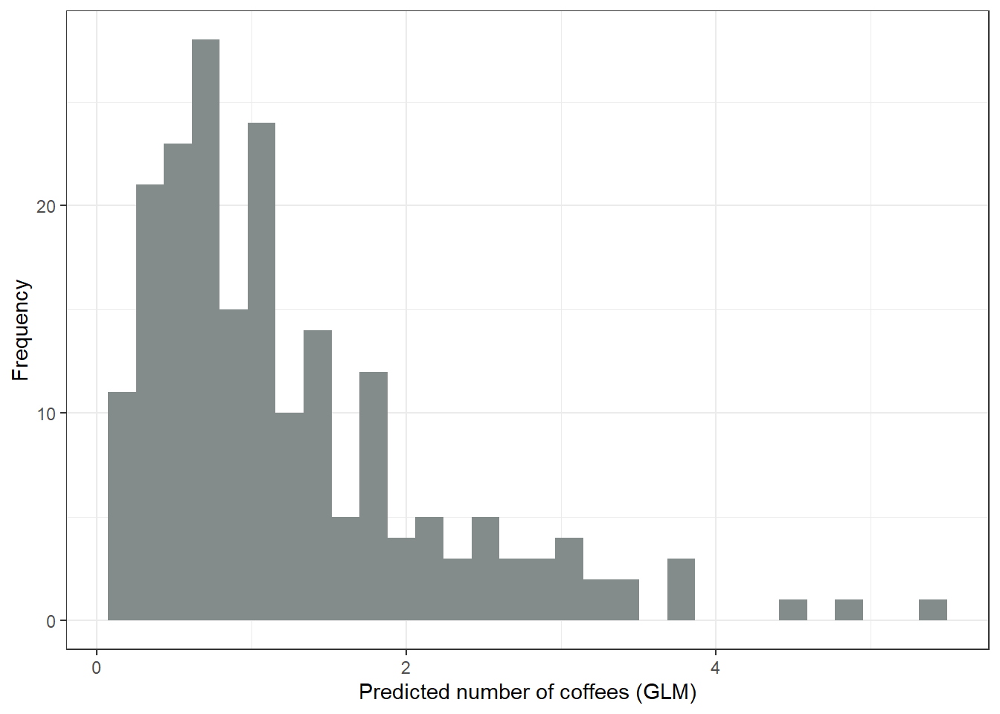
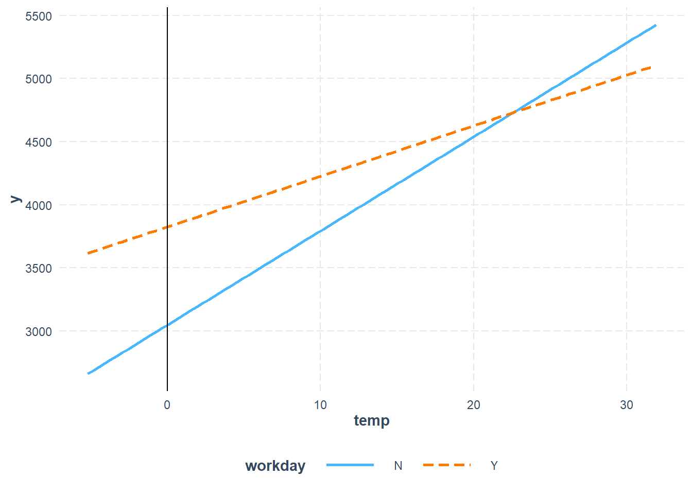
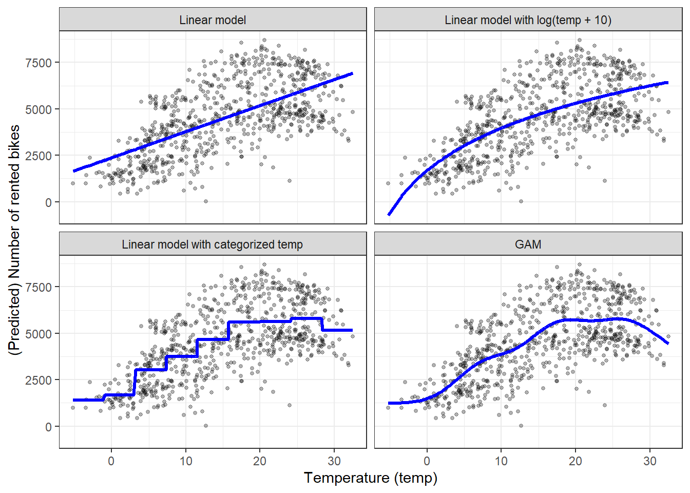
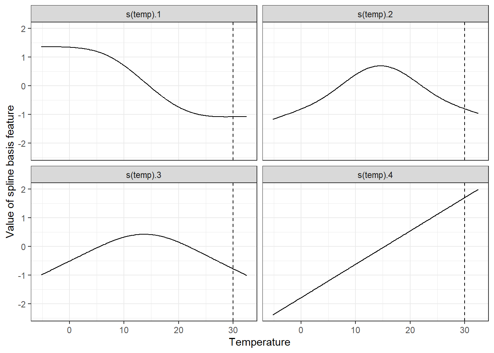
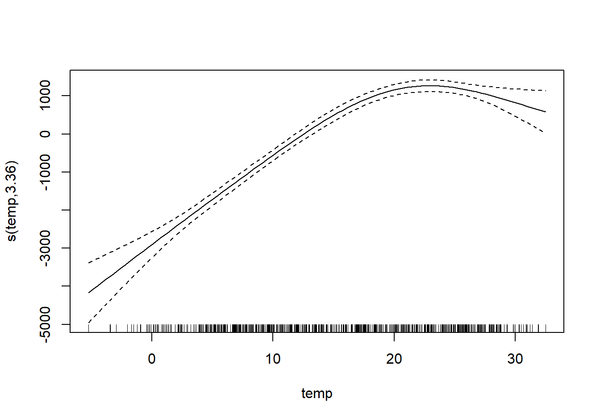

GLM, GAM ve ötesi
Doğrusal regresyon modelinin en büyük gücü ama aynı zamanda en büyük zayıflığı, tahminin özniteliklerin ağırlıklı toplamı olarak modellenmesidir. Buna ek olarak doğrusal model başka pek çok varsayımla birlikte gelir. Kötü haber (aslında pek de haber sayılmaz) şu ki bu varsayımların hepsi gerçekte sıklıkla ihlal edilir: Özniteliklere koşullu sonuç Gauss dışı bir dağılıma sahip olabilir, öznitelikler etkileşimde olabilir ve öznitelikler ile sonuç arasındaki ilişki doğrusal olmayabilir. İyi haber ise istatistik topluluğunun doğrusal regresyon modelini basit bir bıçaktan bir İsviçre çakısına dönüştüren çeşitli değişiklikler geliştirmiş olmasıdır.
Bu bölüm kesinlikle doğrusal modelleri genişletme konusunda kesin bir kılavuz değildir. Bunun yerine Genelleştirilmiş Doğrusal Modeller (GLM’ler) ve Genelleştirilmiş Toplamsal Modeller (GAM’ler) gibi uzantılara genel bir bakış sunar ve size biraz sezgi kazandırır. Okuduktan sonra doğrusal modellerin nasıl genişletileceğine dair sağlam bir genel bakışa sahip olmalısınız. Önce doğrusal regresyon modeli hakkında daha fazla bilgi edinmek istiyorsanız, henüz okumadıysanız doğrusal regresyon modelleri bölümünü okumanızı öneririm.
Doğrusal regresyon modelinin formülünü hatırlayalım:
\[\hat{f}(\mathbf{x}) = \beta_{0} + \beta_{1} x_{1} + \ldots + \beta_{p} x_{p} + \epsilon\]
Doğrusal regresyon modeli, bir örneğin tahmininin \(p\) özniteliğinin ağırlıklı toplamı ve Gauss dağılımına uyan bir \(\epsilon^{(i)}\) rastgele değişkeniyle ifade edilebileceğini varsayar. Veriyi bu formülün korsesine zorlayarak çok fazla model yorumlanabilirliği elde ederiz. Öznitelik etkileri toplamsaldır, yani etkileşim yoktur; ilişki de doğrusaldır. Bu da bir öznitelik ile beklenen sonuç arasındaki ilişkiyi tek bir sayıya, yani kestirilen ağırlığa sıkıştırmamızı sağlar.
Ancak basit bir ağırlıklı toplam, gerçek dünyadaki pek çok tahmin problemi için fazla kısıtlayıcıdır. Bu bölümde klasik doğrusal regresyon modelinin üç sorununu ve bunların nasıl çözüleceğini öğreneceğiz. İhlal edilebilecek varsayımlarla ilgili çok daha fazla sorun vardır, ancak biz Şekil 1 içinde gösterilen üç soruna odaklanacağız.
Sorun: Özniteliklere koşullu y hedef sonucu Gauss dağılımına uymuyor.
Örnek: Belirli bir günde kaç dakika bisiklet süreceğimi tahmin etmek istediğimi düşünelim. Öznitelik olarak günün türü, hava durumu vb. bilgilerim var. Doğrusal bir model kullanırsam, 0 dakikada durmayan bir Gauss dağılımını varsaydığı için negatif dakikalar tahmin edebilir. Ayrıca doğrusal bir modelle olasılık tahmin etseydim, negatif ya da 1’den büyük olasılıklar elde edebilirdim.
Çözüm: Genelleştirilmiş Doğrusal Modeller (GLM’ler).
Sorun: Öznitelikler etkileşimde.
Örnek: Ortalamada hafif yağmurun bisiklet sürme isteğim üzerinde hafif bir negatif etkisi vardır. Ancak yazın, iş çıkış saatlerinde yağmuru memnuniyetle karşılarım; çünkü o zaman yalnızca güzel havada bisiklete binenlerin hepsi evde kalır ve bisiklet yolları bana kalır! Bu, zaman ile hava durumu arasında, tamamen toplamsal bir modelin yakalayamayacağı bir etkileşimdir.
Çözüm: Etkileşim eklemek.
Sorun: Öznitelikler ile y arasındaki gerçek ilişki doğrusal değil.
Örnek: 0 ile 25 santigrat derece arasında sıcaklığın bisiklet sürme isteğim üzerindeki etkisi doğrusal olabilir; bu da 0’dan 1 dereceye artışın, bisiklet sürme isteğinde 20’den 21 dereceye artışla aynı artışa neden olduğu anlamına gelir. Ancak daha yüksek sıcaklıklarda bisiklet sürme motivasyonum sabitlenir, hatta azalır; hava çok sıcakken bisiklete binmeyi sevmem.
Çözümler: Genelleştirilmiş Toplamsal Modeller (GAM’ler); özniteliklerin dönüştürülmesi.
İpucuDoğrusal model ihlallerini kontrol edin
Öznitelik etkileşimleri gibi bu sorunları, çözümleri sade doğrusal regresyonla karşılaştırarak ampirik olarak kontrol edebilirsiniz: Bir etkileşim terimi kullanıldığında doğrusal modeliniz doğrulama verisinde daha iyi performans gösteriyor mu?
Bu üç sorunun çözümleri bu bölümde sunulmaktadır. Doğrusal modelin diğer pek çok uzantısı dışarıda bırakılmıştır. Burada her şeyi ele almaya çalışsaydım, bölüm kısa sürede zaten pek çok başka kitapta ele alınmış bir konu hakkında kitap içinde bir kitaba dönüşürdü. Ama madem buradasınız, doğrusal model uzantıları için küçük bir sorun ve çözüm özeti hazırladım; bunu bölümün sonunda bulabilirsiniz.
Gauss dışı sonuçlar - GLM’ler
Doğrusal regresyon modeli, girdi özniteliklerine koşullu sonucun Gauss dağılımına uyduğunu varsayar. Bu varsayım pek çok durumu dışarıda bırakır: Sonuç bir kategori (kanser ya da sağlıklı), bir sayım (çocuk sayısı), bir olayın gerçekleşmesine kadar geçen süre (bir makinenin arızalanmasına kadar geçen süre) ya da birkaç çok yüksek değere sahip, oldukça çarpık bir sonuç (hane geliri) da olabilir. Doğrusal regresyon modeli, tüm bu sonuç türlerini modelleyecek şekilde genişletilebilir. Bu uzantıya Genelleştirilmiş Doğrusal Modeller ya da kısaca GLM’ler denir. Bu bölüm boyunca GLM adını hem genel çerçeve hem de bu çerçevedeki belirli modeller için kullanacağım. Her GLM’in temel fikri şudur: Özniteliklerin ağırlıklı toplamını koruyun, ancak Gauss dışı sonuç dağılımlarına izin verin ve bu dağılımın beklenen ortalaması ile ağırlıklı toplamı doğrusal olmayan bir fonksiyon aracılığıyla bağlayın. Örneğin lojistik regresyon modeli, sonuç için Bernoulli dağılımını varsayar ve beklenen ortalama ile ağırlıklı toplamı lojistik fonksiyon aracılığıyla bağlar.
GLM, özniteliklerin ağırlıklı toplamını varsayılan dağılımın ortalama değerine, sonuç türüne göre esnek biçimde seçilebilen \(g\) bağlantı fonksiyonu (link function) aracılığıyla matematiksel olarak bağlar.
\[g(\mathbb{E}[Y|\mathbf{x}])=\beta_0+\beta_1 x_{1}+\ldots+\beta_p x_{p} = \mathbf{x}^T \boldsymbol{\beta}\]
GLM’ler üç bileşenden oluşur: \(g\) bağlantı fonksiyonu, \(\mathbf{x}^T \boldsymbol{\beta}\) ağırlıklı toplamı (bazen doğrusal yordayıcı olarak da adlandırılır) ve \(\mathbb{E}_Y\)’yi tanımlayan, üstel aileden bir olasılık dağılımı.
Üstel aile, bir üs, dağılımın ortalaması ve varyansı ile bazı başka parametreleri içeren aynı (parametrelendirilmiş) formülle yazılabilen dağılımlar kümesidir. Matematiksel ayrıntılara girmeyeceğim, çünkü bu başlı başına çok büyük ve girmek istemediğim bir evren. Wikipedia’da üstel aileden dağılımların derli toplu bir listesi bulunmaktadır. Bu listedeki herhangi bir dağılım GLM’iniz için seçilebilir. Tahmin etmek istediğiniz sonucun türüne göre uygun bir dağılım seçin. Sonuç bir şeyin sayımı mı (örneğin bir hanede yaşayan çocuk sayısı)? O zaman Poisson dağılımı iyi bir seçim olabilir. Sonuç her zaman pozitif mi (örneğin iki olay arasındaki süre)? O zaman üstel dağılım iyi bir seçim olabilir.
Klasik doğrusal modeli bir GLM’in özel bir durumu olarak ele alalım. Klasik doğrusal modelde Gauss dağılımı için bağlantı fonksiyonu basitçe birim (özdeşlik) fonksiyonudur. Gauss dağılımı ortalama ve varyans parametreleriyle parametrelendirilir. Ortalama, ortalamada beklediğimiz değeri; varyans ise değerlerin bu ortalama etrafında ne kadar değiştiğini betimler. Doğrusal modelde bağlantı fonksiyonu, özniteliklerin ağırlıklı toplamını Gauss dağılımının ortalamasına bağlar.
GLM çerçevesinde bu kavram herhangi bir dağılıma (üstel aileden) ve herhangi bir bağlantı fonksiyonuna genelleşir. \(y\) bir şeyin sayımıysa, örneğin birinin belirli bir günde içtiği kahve sayısıysa, bunu Poisson dağılımlı ve bağlantı fonksiyonu olarak doğal logaritmayı kullanan bir GLM ile modelleyebiliriz:
\[\ln(\mathbb{E}[Y|\mathbf{x}])=\mathbf{x}^{T}\boldsymbol{\beta}\]
Lojistik regresyon modeli de Bernoulli dağılımını varsayan ve bağlantı fonksiyonu olarak logit fonksiyonunu kullanan bir GLM’dir. Lojistik regresyonda kullanılan binom dağılımının ortalaması, \(y\)’nin bir olma olasılığıdır.
\[\mathbf{x}^{T}\boldsymbol{\beta}=\ln\left(\frac{\mathbb{E}[Y|\mathbf{x}]}{1-\mathbb{E}[Y|\mathbf{x}]}\right)=\ln\left(\frac{\mathbb{P}(Y=1|\mathbf{x})}{1-\mathbb{P}(Y=1|\mathbf{x})}\right)\]
Bu denklemi bir tarafta \(\mathbb{P}(Y=1)\) kalacak şekilde çözersek, lojistik regresyon formülünü elde ederiz:
\[\mathbb{P}(Y=1)=\frac{1}{1+\exp(-\mathbf{x}^{T}\boldsymbol{\beta})}\]
Üstel ailedeki her dağılımın, dağılımdan matematiksel olarak türetilebilen bir kanonik bağlantı fonksiyonu vardır. GLM çerçevesi, bağlantı fonksiyonunu dağılımdan bağımsız olarak seçmeyi mümkün kılar. Doğru bağlantı fonksiyonu nasıl seçilir? Kusursuz bir tarifi yoktur. Hedefinizin dağılımına ilişkin bilgiyi, ama aynı zamanda kuramsal değerlendirmeleri ve modelin gerçek verinize ne kadar iyi uyduğunu hesaba katarsınız. Bazı dağılımlar için kanonik bağlantı fonksiyonu, o dağılım için geçersiz olan değerlere yol açabilir. Üstel dağılım durumunda kanonik bağlantı fonksiyonu negatif terstir; bu da üstel dağılımın tanım kümesinin dışında kalan negatif tahminlere yol açabilir. Herhangi bir bağlantı fonksiyonu seçebildiğiniz için basit çözüm, dağılımın tanım kümesine uyan başka bir fonksiyon seçmektir.
Örnekler
GLM’lere olan ihtiyacı vurgulamak için kahve içme davranışına ilişkin bir veri seti simüle ettim. Günlük kahve içme davranışınız hakkında veri topladığınızı varsayın. Kahveyi sevmiyorsanız çay ya da başka bir şey olduğunu düşünün. Fincan sayısının yanı sıra 1 ile 10 arasında bir ölçekte o anki stres düzeyinizi, yine 1 ile 10 arasında bir ölçekte önceki gece ne kadar iyi uyuduğunuzu ve o gün çalışmanız gerekip gerekmediğini kaydediyorsunuz. Amaç, stres, uyku ve iş öznitelikleri verildiğinde kahve sayısını tahmin etmektir. 200 gün için veri simüle ettim. Stres ve uyku 1 ile 10 arasında düzgün dağılımdan çekildi, iş evet/hayır ise 50/50 olasılıkla çekildi (ne hayat ama!). Ardından her gün için kahve sayısı bir Poisson dağılımından çekildi; yoğunluk \(\lambda\) (bu aynı zamanda Poisson dağılımının beklenen değeridir) uyku, stres ve iş özniteliklerinin bir fonksiyonu olarak modellendi. Bu hikâyenin nereye varacağını tahmin edebilirsiniz: “Hey, bu veriyi doğrusal bir modelle modelleyelim … Ah, çalışmıyor … Poisson dağılımlı bir GLM deneyelim … SÜRPRİZ! Şimdi çalışıyor!”. Umarım hikâyenin sonunu size fazla ele vermemişimdir.

Şekil 2, hedef değişkenin, yani belirli bir gündeki kahve sayısının dağılımını göstermektedir. 200 günün 79 gününde hiç kahve içmediniz; en uç günde ise 7 kahve içtiniz. Uyku düzeyi, stres düzeyi ve iş evet/hayır özniteliklerini kullanarak kahve sayısını tahmin etmek için safça bir doğrusal model kullanalım. Yanlış bir şekilde Gauss dağılımını varsaydığımızda ne ters gidebilir? Yanlış bir varsayım kestirimleri, özellikle de ağırlıkların güven aralıklarını geçersiz kılabilir. Daha belirgin bir sorun ise, aşağıdaki şekilde görüldüğü gibi tahminlerin gerçek sonucun “izin verilen” tanım kümesiyle uyuşmamasıdır (bkz. Şekil 3). Doğrusal model negatif sayıda kahve tahmin ettiği için anlamsızdır. Test verisinde de basitçe kötü performans gösterebilir.

Dağılımların uyuşmaması sorunu Genelleştirilmiş Doğrusal Modeller (GLM’ler) ile çözülebilir. Bağlantı fonksiyonunu ve varsayılan dağılımı değiştirebiliriz. Bir olasılık, Gauss dağılımını koruyup birim fonksiyon yerine her zaman pozitif tahminlere yol açan bir bağlantı fonksiyonu, örneğin log bağlantısını (tersi exp fonksiyonudur) kullanmaktır. Daha da iyisi: Veri üretme sürecine karşılık gelen bir dağılım ve uygun bir bağlantı fonksiyonu seçeriz. Sonuç bir sayım olduğundan, bağlantı fonksiyonu olarak logaritmayla birlikte Poisson dağılımı doğal bir seçimdir. Bu durumda veri zaten Poisson dağılımıyla üretildiği için Poisson GLM kusursuz bir seçimdir. Uydurulan Poisson GLM, tahmin edilen değerlerin aşağıdaki şekilde gösterilen dağılımına yol açar (bkz. Şekil 4).

Negatif miktarda kahve yok; şimdi çok daha iyi görünüyor.
GLM ağırlıklarının yorumu
Varsayılan dağılım, bağlantı fonksiyonuyla birlikte kestirilen öznitelik ağırlıklarının nasıl yorumlanacağını belirler. Kahve sayısı örneğinde Poisson dağılımlı ve log bağlantılı bir GLM kullandım; bu da beklenen sonuç ile \(\text{str}\) (stres), \(\text{slp}\) (uyku) ve \(\text{wrk}\) (iş) öznitelikleri arasında şu ilişkiyi ifade eder. Aşağıdaki örnekte matematiksel gösterim konusunda biraz serbest davranmama izin verin:
\[\ln(\mathbb{E}[\text{coffee}|\text{str},\text{slp},\text{wrk}])=\beta_0+\beta_{\text{str}}x_{\text{str}} + \beta_{\text{slp}}x_{\text{slp}} +\beta_{\text{wrk}}x_{\text{wrk}}\]
Ağırlıkları yorumlamak için bağlantı fonksiyonunun tersini alırız; böylece özniteliklerin beklenen sonucun logaritması üzerindeki değil, beklenen sonuç üzerindeki etkisini yorumlayabiliriz.
\[\mathbb{E}[\text{coffee}|\text{str},\text{slp},\text{wrk}]=\exp\left(\beta_0+\beta_{\text{str}}x_{\text{str}}+\beta_{\text{slp}}x_{\text{slp}} +\beta_{\text{wrk}}x_{\text{wrk}}\right)\]
Tüm ağırlıklar üstel fonksiyonun içinde olduğundan etki yorumu toplamsal değil çarpımsaldır, çünkü \(\exp(a + b)\), \(\exp(a)\) çarpı \(\exp(b)\)’ye eşittir. Yorum için son bileşen, bu oyuncak örneğin gerçek ağırlıklarıdır. Tablo 1, kestirilen ağırlıkları ve \(\exp(\text{ağırlıklar})\) değerlerini %95 güven aralığıyla birlikte listelemektedir:
| weight | exp(weight) [2.5%, 97.5%] | |
|---|---|---|
| (Intercept) | -0.11 | 0.90 [0.57, 1.39] |
| stress | 0.11 | 1.11 [1.06, 1.17] |
| sleep | -0.20 | 0.81 [0.77, 0.86] |
| workYES | 1.09 | 2.99 [2.27, 3.98] |
Stres düzeyini bir puan artırmak, beklenen kahve sayısını 1.11 çarpanıyla çarpar. Uyku kalitesini bir puan artırmak, beklenen kahve sayısını 0.81 çarpanıyla çarpar. Bir iş gününde tahmin edilen kahve sayısı, ortalamada izin günündeki kahve sayısının 2.99 katıdır. Özetle, stres ne kadar fazla, uyku ne kadar az ve iş ne kadar fazlaysa, o kadar çok kahve tüketilir.
Bu kısımda, hedef Gauss dağılımına uymadığında faydalı olan Genelleştirilmiş Doğrusal Modeller hakkında biraz bilgi edindiniz. Şimdi de iki öznitelik arasındaki etkileşimlerin doğrusal regresyon modeline nasıl dahil edileceğine bakalım.
Etkileşimler
Doğrusal regresyon modeli, bir özniteliğin etkisinin diğer özniteliklerin değerlerinden bağımsız olarak aynı olduğunu (= etkileşim olmadığını) varsayar. Ancak veride çoğu zaman etkileşimler vardır. Kiralanan bisiklet sayısını tahmin ederken, sıcaklık ile günün iş günü olup olmadığı arasında bir etkileşim olabilir. Belki de insanlar çalışmak zorunda olduğunda sıcaklık kiralanan bisiklet sayısını pek etkilemez, çünkü insanlar ne olursa olsun kiralık bisikletle işe gidecektir. İzin günlerinde ise pek çok kişi keyif için bisiklete biner, ama yalnızca hava yeterince sıcaksa. Kiralık bisikletler söz konusu olduğunda sıcaklık ile iş günü arasında bir etkileşim bekleyebilirsiniz.
Doğrusal modelin etkileşimleri içermesini nasıl sağlayabiliriz? Doğrusal modeli uydurmadan önce, öznitelik matrisi \(\mathbf{X}\)’e öznitelikler arasındaki etkileşimi temsil eden bir sütun ekleyin ve modeli her zamanki gibi uydurun. Çözüm bir bakıma zariftir, çünkü doğrusal modelde herhangi bir değişiklik gerektirmez, yalnızca veride ek sütunlar gerektirir. İş günü ve sıcaklık örneğinde, iş günü referans kategori olarak alındığında, çalışılmayan günler için sıfır, aksi hâlde sıcaklık özniteliğinin değerini alan yeni bir öznitelik eklerdik. Verimizin Tablo 2 içindeki gibi göründüğünü varsayalım.
| work | temp |
|---|---|
| Y | 25 |
| N | 12 |
| N | 30 |
| Y | 5 |
Doğrusal modelin kullandığı veri matrisi biraz farklı görünür. Tablo 3, herhangi bir etkileşim belirtmediğimizde model için hazırlanan verinin nasıl göründüğünü göstermektedir. Normalde bu dönüşüm herhangi bir istatistik yazılımı tarafından otomatik olarak yapılır.
| Intercept | workY | temp |
|---|---|---|
| 1 | 1 | 25 |
| 1 | 0 | 12 |
| 1 | 0 | 30 |
| 1 | 1 | 5 |
İlk sütun sabit terimdir. İkinci sütun, referans kategori için 0, diğeri için 1 olmak üzere kategorik özniteliği kodlar. Üçüncü sütun sıcaklığı içerir.
Doğrusal modelin sıcaklık ile iş günü özniteliği arasındaki etkileşimi dikkate almasını istiyorsak, etkileşim için bir sütun eklememiz gerekir (bkz. Tablo 4).
| Intercept | workY | temp | workY.temp |
|---|---|---|---|
| 1 | 1 | 25 | 25 |
| 1 | 0 | 12 | 0 |
| 1 | 0 | 30 | 0 |
| 1 | 1 | 5 | 5 |
Yeni “workY.temp” sütunu, iş günü (work) ve sıcaklık (temp) öznitelikleri arasındaki etkileşimi yakalar. Bu yeni öznitelik sütunu, iş özniteliği referans kategorideyse (“N”, iş günü değil) bir örnek için sıfırdır; aksi hâlde örneğin sıcaklık özniteliğinin değerini alır. Bu tür bir kodlamayla doğrusal model, iki gün türü için sıcaklığın farklı bir doğrusal etkisini öğrenebilir. Bu, iki öznitelik arasındaki etkileşim etkisidir. Etkileşim terimi olmadan, kategorik bir öznitelik ile sayısal bir özniteliğin ortak etkisi, farklı kategoriler için dikey olarak kaydırılmış bir doğruyla betimlenebilir. Etkileşimi dahil edersek, sayısal özniteliğin etkisinin (eğimin) her kategoride farklı bir değer almasına izin vermiş oluruz.
İki kategorik özniteliğin etkileşimi de benzer şekilde çalışır. Kategorilerin birleşimlerini temsil eden ek öznitelikler oluştururuz. Tablo 5, iş günü (work) ve kategorik bir hava durumu özniteliği (wthr) içeren yapay bir veri göstermektedir. Tabloyu biraz daraltmak için hava durumu kategorilerini burada kısaltıyorum: G=GOOD (iyi), B=BAD (kötü) ve M=MISTY (sisli).
| work | wthr |
|---|---|
| Y | B |
| N | G |
| N | M |
| Y | B |
Ardından etkileşim terimlerini ekleyerek aşağıdaki tabloyu elde ederiz (bkz. Tablo 6). İlk sütun sabit terimi kestirmeye yarar. İkinci sütun kodlanmış iş özniteliğidir. Üçüncü ve dördüncü sütunlar hava durumu özniteliği içindir; bu öznitelik iki sütun gerektirir, çünkü biri referans kategori olan üç kategorinin etkisini yakalamak için iki ağırlığa ihtiyacınız vardır. Geri kalan sütunlar etkileşimleri yakalar. Her iki özniteliğin her kategorisi için (referans kategoriler hariç), her iki özniteliğin de belirli bir kategoriye sahip olması durumunda 1, aksi hâlde 0 olan yeni bir öznitelik sütunu oluştururuz.
| Intercept | workY | wthrG | wthrM | workY.wthrG | workY.wthrM |
|---|---|---|---|---|---|
| 1 | 1 | 0 | 0 | 0 | 0 |
| 1 | 0 | 1 | 0 | 0 | 0 |
| 1 | 0 | 0 | 1 | 0 | 0 |
| 1 | 1 | 0 | 0 | 0 | 0 |
İki sayısal öznitelik için etkileşim sütununu oluşturmak daha da kolaydır: Her iki sayısal özniteliği basitçe çarparız.
Etkileşim terimlerini otomatik olarak tespit edip ekleyen yaklaşımlar vardır. Bunlardan biri RuleFit bölümünde bulunabilir. RuleFit algoritması önce etkileşim terimlerini çıkarır, ardından etkileşimleri içeren bir doğrusal regresyon modeli kestirir. Bir diğer seçenek GA2M’dir (Caruana vd. 2015).
Örnek
Doğrusal model bölümünde zaten modellediğimiz bisiklet kiralama tahmin görevine geri dönelim. Bu kez ek olarak sıcaklık ile iş günü özniteliği arasındaki bir etkileşimi de dikkate alıyoruz. Bu, Tablo 7 içinde gösterilen kestirilen ağırlıklar ve güven aralıklarıyla sonuçlanır.
| Weight | Std. Error | 2.5% | 97.5% | |
|---|---|---|---|---|
| (Intercept) | 2385.1 | 355.4 | 1686.8 | 3083.5 |
| seasonSPRING | 433.2 | 168.5 | 102.1 | 764.2 |
| seasonSUMMER | 239.3 | 216.9 | -186.9 | 665.5 |
| seasonFALL | 618.0 | 151.5 | 320.4 | 915.6 |
| holidayY | -434.7 | 236.9 | -900.1 | 30.8 |
| workdayY | 776.7 | 200.6 | 382.5 | 1171.0 |
| weatherMISTY | -374.9 | 119.5 | -609.8 | -140.0 |
| weatherBAD | -1802.3 | 303.2 | -2398.2 | -1206.4 |
| temp | 74.5 | 12.7 | 49.5 | 99.5 |
| hum | -21.7 | 4.5 | -30.6 | -12.9 |
| windspeed | -45.5 | 9.4 | -64.0 | -27.0 |
| cnt_2d_bfr | 0.6 | 0.0 | 0.5 | 0.6 |
| workdayY:temp | -34.4 | 11.2 | -56.4 | -12.5 |
Ek etkileşim etkisi negatiftir (-34.4) ve sıfırı içermeyen %95 güven aralığının gösterdiği gibi sıfırdan anlamlı biçimde farklıdır. Bu arada, verinin IID (bağımsız ve özdeş dağılımlı) olup olmadığı tartışmalıdır, çünkü birbirine yakın günler birbirinden bağımsız değildir. Önceki sayımlara koşullandırmak ise sorunu en azından bir ölçüde hafifletmelidir. Güven aralıkları yanıltıcı olabilir; bunu ihtiyatla karşılayın. Etkileşim terimi, dahil olan özniteliklerin ağırlıklarının yorumunu değiştirir. İş günü olduğunda sıcaklığın negatif bir etkisi var mıdır? Tablo eğitimsiz bir kullanıcıya bunu düşündürse bile yanıt hayırdır.
İpucuAna etkileri dahil edin
Bir modelde hem ana etkileri hem de etkileşim etkisini dahil ettiğinizden emin olun. Bu, yanıltıcı yorumların önlenmesine yardımcı olur.
“workdayY:temp” etkileşim ağırlığını tek başına yorumlayamayız, çünkü yorum şöyle olurdu: “Diğer tüm öznitelik değerleri değişmeden kalırken, iş günü için sıcaklığın etkileşim etkisini artırmak tahmin edilen bisiklet sayısını azaltır.” Ancak etkileşim etkisi yalnızca sıcaklığın ana etkisine eklenir. Bugünün bir iş günü olduğunu ve sıcaklık 1 derece daha yüksek olsaydı ne olacağını bilmek istediğimizi varsayalım. O zaman kestirimin ne kadar arttığını belirlemek için hem “temp” hem de “workdayY:temp” ağırlıklarını toplamamız gerekir.
Etkileşimi görsel olarak anlamak daha kolaydır (bkz. Şekil 5). Kategorik ve sayısal bir öznitelik arasına bir etkileşim terimi ekleyerek sıcaklık için bir yerine iki eğim elde ederiz. İnsanların çalışmak zorunda olmadığı günler (‘N’) için sıcaklık eğimi doğrudan tablodan okunabilir (74.5). İnsanların çalışmak zorunda olduğu günler (‘Y’) için sıcaklık eğimi, her iki sıcaklık ağırlığının toplamıdır (74.5 -34.4 = 40.1). ‘N’ doğrusunun sıcaklık = 0’daki kesişim noktası, doğrusal modelin sabit terimiyle belirlenir (2385.1). ‘Y’ doğrusunun sıcaklık = 0’daki kesişim noktası ise sabit terim + iş günü etkisiyle belirlenir (2385.1 + 776.7 = 3161.8).

Doğrusal olmayan etkiler - GAM’ler
Dünya doğrusal değildir. Doğrusal modellerdeki doğrusallık, bir örneğin belirli bir öznitelikte hangi değere sahip olduğundan bağımsız olarak, değeri bir birim artırmanın tahmin edilen sonuç üzerinde her zaman aynı etkiye sahip olduğu anlamına gelir. Sıcaklığı 10 santigrat derecedeyken bir derece artırmanın, kiralık bisiklet sayısı üzerinde sıcaklık zaten 30 dereceyken artırmakla aynı etkiye sahip olduğunu varsaymak makul müdür? Sezgisel olarak, sıcaklığı 10’dan 11 santigrat dereceye çıkarmanın bisiklet kiralamaları üzerinde pozitif, 30’dan 31’e çıkarmanın ise negatif bir etkisi olması beklenir; kitap boyunca pek çok örnekte göreceğiniz gibi durum gerçekten de budur. Sıcaklık özniteliğinin kiralık bisiklet sayısı üzerinde doğrusal, pozitif bir etkisi vardır; ancak bir noktada düzleşir ve yüksek sıcaklıklarda negatif bir etkiye bile dönüşür. Doğrusal model bunu umursamaz; (Öklid uzaklığını en aza indirerek) görev bilinciyle en iyi doğrusal düzlemi bulur.
Doğrusal olmayan ilişkileri aşağıdaki tekniklerden birini kullanarak modelleyebilirsiniz:
- Özniteliğin basit bir dönüşümü (örneğin logaritma)
- Özniteliğin kategorize edilmesi
- Genelleştirilmiş Toplamsal Modeller (GAM’ler)
Her yöntemin ayrıntılarına girmeden önce, üçünü de gösteren bir örnekle başlayalım. Bisiklet kiralama veri setini aldım ve kiralık bisiklet sayısını tahmin etmek için yalnızca sıcaklık özniteliğini kullanan bir doğrusal model eğittim. Şekil 6, şu yöntemlerle kestirilen eğimi göstermektedir: standart doğrusal model, sıcaklığı dönüştürülmüş (logaritma) doğrusal model, sıcaklığın kategorik bir öznitelik olarak ele alındığı doğrusal model ve regresyon spline’larının kullanıldığı model (GAM). Doğrusal model (sol üst) veriye iyi uymamaktadır. Bir çözüm, özniteliği örneğin logaritma ile dönüştürmek (sağ üst), kategorize etmek (sol alt; ki bu genellikle kötü bir karardır) ya da sıcaklık için otomatik olarak düzgün bir eğri uydurabilen Genelleştirilmiş Toplamsal Modelleri kullanmaktır (sağ alt).

Öznitelik dönüşümü
Dönüşüm olarak çoğunlukla özniteliğin logaritması kullanılır. Logaritma kullanmak, sıcaklıktaki her 10 katlık artışın bisiklet sayısı üzerinde aynı doğrusal etkiye sahip olduğunu ifade eder; yani 1 santigrat dereceden 10 santigrat dereceye geçmek, 0,1’den 1’e geçmekle aynı etkiye sahiptir (kulağa yanlış geliyor). Öznitelik dönüşümlerine diğer örnekler karekök, kare fonksiyonu ve üstel fonksiyondur. Bir öznitelik dönüşümü kullanmak, verideki bu özniteliğin sütununu logaritma gibi özniteliğin bir fonksiyonuyla değiştirmeniz ve doğrusal modeli her zamanki gibi uydurmanız anlamına gelir. Bazı istatistik programları, dönüşümleri doğrusal modelin çağrısı içinde belirtmenize de izin verir. Özniteliği dönüştürürken yaratıcı olabilirsiniz. Özniteliğin yorumu, seçilen dönüşüme göre değişir. Log dönüşümü kullanırsanız, doğrusal modeldeki yorum şu hâle gelir: “Özniteliğin logaritması bir artırılırsa, tahmin ilgili ağırlık kadar artar.” Birim fonksiyon olmayan bir bağlantı fonksiyonuna sahip bir GLM kullandığınızda yorum daha karmaşık hâle gelir, çünkü her iki dönüşümü de yoruma dahil etmeniz gerekir (log ve exp gibi birbirini götürdükleri durumlar hariç; o zaman yorum kolaylaşır).
Özniteliğin kategorize edilmesi
Doğrusal olmayan bir etki elde etmenin bir başka yolu özniteliği ayrıklaştırmak, yani kategorik bir özniteliğe dönüştürmektir. Örneğin sıcaklık özniteliğini [-10, -5), [-5, 0), … gibi düzeylere sahip 20 aralığa bölebilirsiniz. Sürekli sıcaklık yerine kategorize edilmiş sıcaklığı kullandığınızda, her düzey kendi kestirimini aldığı için doğrusal model bir basamak fonksiyonu kestirir. Bu yaklaşımın sorunları şunlardır: daha fazla veriye ihtiyaç duyar, aşırı uyuma (overfitting) daha yatkındır ve özniteliğin anlamlı bir şekilde nasıl ayrıklaştırılacağı belirsizdir (eşit aralıklı aralıklar mı, çeyreklikler mi? Kaç aralık?). Ayrıklaştırmayı ancak bunun için çok güçlü bir gerekçe varsa kullanırdım. Örneğin modeli başka bir çalışmayla karşılaştırılabilir kılmak için.
Genelleştirilmiş Toplamsal Modeller (GAM’ler)
Neden (genelleştirilmiş) doğrusal modelin doğrusal olmayan ilişkileri öğrenmesine ‘basitçe’ izin vermeyelim? GAM’lerin arkasındaki motivasyon budur. GAM’ler, ilişkinin basit bir ağırlıklı toplam olması gerektiği kısıtlamasını gevşetir ve bunun yerine sonucun her özniteliğin keyfi fonksiyonlarının toplamıyla modellenebileceğini varsayar. Matematiksel olarak bir GAM’deki ilişki şöyle görünür:
\[g[\mathbb{E}(Y|X = \mathbf{x})] = \beta_0 + f_1(x_1) + f_2(x_2) + \ldots + f_p(x_p)\]
Formül GLM formülüne benzer; farkı, \(\beta_j x_j\) doğrusal teriminin daha esnek bir \(f_j(x_j)\) fonksiyonuyla değiştirilmiş olmasıdır. Bir GAM’in özü hâlâ öznitelik etkilerinin toplamıdır, ancak bazı öznitelikler ile çıktı arasında doğrusal olmayan ilişkilere izin verme seçeneğiniz vardır. Doğrusal etkiler de çerçevenin kapsamındadır; çünkü doğrusal olarak ele alınacak öznitelikler için \(f_j(x_j)\)’yi yalnızca \(\beta_j x_j\) biçimini alacak şekilde sınırlayabilirsiniz.
Asıl soru, doğrusal olmayan fonksiyonların nasıl öğrenileceğidir. Yanıtın adı “spline’lar” ya da “spline fonksiyonları”dır. Spline’lar, daha basit baz fonksiyonlarından oluşturulan fonksiyonlardır. Spline’lar, daha karmaşık başka fonksiyonlara yaklaşmak için kullanılabilir. Biraz daha karmaşık bir şey inşa etmek için Lego parçalarını üst üste koymak gibi. Bu spline baz fonksiyonlarını tanımlamanın kafa karıştırıcı sayıda yolu vardır. Baz fonksiyonlarını tanımlamanın tüm yollarını öğrenmek istiyorsanız, yolculuğunuzda size bol şans dilerim. Burada ayrıntılara girmeyeceğim; yalnızca bir sezgi oluşturacağım. Spline’ları anlamama kişisel olarak en çok yardımcı olan şey, tek tek baz fonksiyonlarını görselleştirmek ve veri matrisinin nasıl değiştirildiğine bakmak oldu. Örneğin sıcaklığı spline’larla modellemek için sıcaklık özniteliğini veriden çıkarır ve yerine, diyelim ki her biri bir spline baz fonksiyonunu temsil eden 4 sütun koyarız. Genellikle daha fazla spline baz fonksiyonunuz olur; ben sayıyı yalnızca gösterim amacıyla azalttım. Bu yeni spline baz özniteliklerinin her örnek için aldığı değer, örneklerin sıcaklık değerlerine bağlıdır. GAM, tüm doğrusal etkilerle birlikte bu spline ağırlıklarını da kestirir. GAM’ler ayrıca ağırlıkları sıfıra yakın tutmak için ağırlıklara bir ceza terimi ekler. Bu, spline’ların esnekliğini fiilen azaltır ve aşırı uyumu azaltır. Eğrinin esnekliğini kontrol etmek için yaygın olarak kullanılan bir düzgünlük (smoothness) parametresi ise çapraz doğrulama ile ayarlanır. Ceza terimiyle yapılan optimizasyonu göz ardı edersek, spline’larla doğrusal olmayan modelleme süslü bir öznitelik mühendisliği gibi görünür.
Bisiklet sayısını yalnızca sıcaklığı kullanan bir GAM ile tahmin ettiğimiz örnekte, modelin öznitelik matrisi Tablo 8 içindeki gibi görünür. Her satır veriden tek bir örneği (bir günü) temsil eder. Her spline baz sütunu, belirli sıcaklık değerlerinde spline baz fonksiyonunun değerini içerir.
| (Intercept) | s(temp).1 | s(temp).2 | s(temp).3 | s(temp).4 |
|---|---|---|---|---|
| 1 | 1.33 | -0.70 | -0.39 | -1.64 |
| 1 | 1.33 | -0.69 | -0.37 | -1.62 |
| 1 | 1.30 | -0.57 | -0.25 | -1.47 |
| 1 | 1.32 | -0.67 | -0.35 | -1.59 |
| 1 | 1.33 | -0.70 | -0.39 | -1.64 |
| 1 | 1.35 | -0.82 | -0.53 | -1.81 |
Bu spline baz fonksiyonlarının nasıl göründüğü aşağıda gösterilmektedir (bkz. Şekil 7).

GAM, her sıcaklık spline baz özniteliğine ağırlıklar atar:
| (Intercept) | s(temp).1 | s(temp).2 | s(temp).3 | s(temp).4 |
|---|---|---|---|---|
| 4519.6 | -922.04 | -740.59 | 2333.45 | 611.39 |
Spline baz fonksiyonlarının kestirilen ağırlıklarla ağırlıklandırılmış toplamından ortaya çıkan gerçek spline eğrisi ise aşağıdaki gibi görünür (bkz. Şekil 8). Düzgün etkilerin yorumlanması, uydurulan eğrinin görsel olarak incelenmesini gerektirir. Spline’lar genellikle ortalama tahmin etrafında merkezlenir, dolayısıyla eğri üzerindeki bir nokta ortalama tahmine olan farktır. Örneğin 0 santigrat derecede tahmin edilen bisiklet sayısı, ortalama tahminden 3.000 daha düşüktür.

Güçlü yönler
Doğrusal modelin tüm bu uzantıları başlı başına birer evren gibidir. Doğrusal modellerle hangi sorunla karşılaşırsanız karşılaşın, muhtemelen onu çözen bir uzantı bulursunuz.
Yöntemlerin çoğu onlarca yıldır kullanılmaktadır. Örneğin GAM’ler neredeyse 30 yaşındadır. Pek çok araştırmacı ve sektörden uygulayıcı doğrusal modeller konusunda çok deneyimlidir ve bu yöntemler pek çok toplulukta modellemenin statükosu olarak kabul görmektedir.
Tahmin yapmanın yanı sıra, modelleri çıkarım yapmak, yani veri hakkında sonuçlar çıkarmak için de kullanabilirsiniz; tabii model varsayımlarının ihlal edilmemesi koşuluyla. Ağırlıklar için güven aralıkları, anlamlılık testleri, tahmin aralıkları ve çok daha fazlasını elde edersiniz.
İstatistik yazılımları genellikle GLM’leri, GAM’leri ve daha özel doğrusal modelleri uydurmak için gerçekten iyi arayüzlere sahiptir.
Pek çok makine öğrenmesi modelinin opaklığı şunlardan kaynaklanır: 1) seyreklik eksikliği, yani çok sayıda öznitelik kullanılması, 2) özniteliklerin doğrusal olmayan biçimde ele alınması, yani etkiyi betimlemek için tek bir ağırlıktan fazlasına ihtiyaç duyulması ve 3) öznitelikler arasındaki etkileşimlerin modellenmesi. Doğrusal modellerin son derece yorumlanabilir olduğu ama çoğu zaman gerçekliği yeterince yakalayamadığı (underfit) varsayılırsa, bu bölümde anlatılan uzantılar, yorumlanabilirliğin bir kısmını korurken daha esnek modellere yumuşak bir geçiş sağlamanın iyi bir yolunu sunar.
Sınırlılıklar
Bir avantaj olarak doğrusal modellerin kendi evrenlerinde yaşadığını söylemiştim. Basit doğrusal modeli genişletmenin yollarının sayısı bunaltıcıdır, üstelik yalnızca yeni başlayanlar için değil. Aslında birden çok paralel evren vardır, çünkü pek çok araştırmacı ve uygulayıcı topluluğu aşağı yukarı aynı şeyi yapan yöntemler için kendi adlarını kullanır; bu da çok kafa karıştırıcı olabilir.
Doğrusal modeldeki değişikliklerin çoğu modeli daha az yorumlanabilir hâle getirir. Birim fonksiyon olmayan her bağlantı fonksiyonu (bir GLM’de) yorumu karmaşıklaştırır; etkileşimler de yorumu karmaşıklaştırır; doğrusal olmayan öznitelik etkileri ya daha az sezgiseldir (log dönüşümü gibi) ya da artık tek bir sayıyla özetlenemez (örneğin spline fonksiyonları).
GLM’ler, GAM’ler vb. veri üretme süreci hakkındaki varsayımlara dayanır. Bunlar ihlal edilirse ağırlıkların yorumu artık geçerli değildir.
Rastgele orman (random forest) ya da gradyan artırmalı ağaçlar (gradient tree boosting) gibi ağaç tabanlı topluluk modellerinin performansı, pek çok durumda en gelişmiş doğrusal modellerden daha iyidir. Bu kısmen kendi deneyimim, kısmen de makine öğrenmesi yarışmalarına ev sahipliği yapan kaggle.com gibi sitelerdeki kazanan modellere ilişkin gözlemlerimdir.
İpucuModelden bağımsız yöntemler kullanın
Dönüşümler, etkileşimler ve düzgün etkiler kullanarak saf doğrusal regresyondan ne kadar uzaklaşırsanız, modeli analiz etmek için kısmi bağımlılık grafiği gibi modelden bağımsız araçlara o kadar çok ihtiyaç duyabilirsiniz.
Yazılım
Bu bölümdeki tüm örnekler R dili kullanılarak oluşturulmuştur. GAM’ler için gam paketi kullanılmıştır, ancak başka pek çok paket de vardır. R’da doğrusal regresyon modellerini genişletmek için inanılmaz sayıda paket bulunur. Başka hiçbir analiz dilinin geçemeyeceği şekilde R, doğrusal regresyon modelinin akla gelebilecek her uzantısına ev sahipliği yapar. Python’da da örneğin GAM uygulamaları bulabilirsiniz (pyGAM gibi), ancak bu uygulamalar o kadar olgun değildir. Python PiML paketi de çeşitli GAM sürümlerini uygulamaktadır.
Diğer uzantılar
Söz verdiğim gibi, doğrusal modellerle karşılaşabileceğiniz sorunların bir listesini, bu sorunlar için favori arama motorunuza kopyalayıp yapıştırabileceğiniz çözüm adlarıyla birlikte aşağıda bulabilirsiniz.
- Verim, bağımsız ve özdeş dağılımlı (iid) olma varsayımını ihlal ediyor. Örneğin aynı hasta üzerinde tekrarlı ölçümler. Mixed models (karma modeller) ya da generalized estimating equations (genelleştirilmiş kestirim denklemleri) araması yapın.
- Modelimin hataları heteroskedastik (değişen varyanslı). Örneğin bir evin değerini tahmin ederken model hataları pahalı evlerde genellikle daha yüksektir; bu da doğrusal modelin eş varyanslılık varsayımını ihlal eder. Robust regression (sağlam regresyon) araması yapın.
- Modelimi güçlü biçimde etkileyen aykırı değerlerim var. Robust regression (sağlam regresyon) araması yapın.
- Bir olayın gerçekleşmesine kadar geçen süreyi tahmin etmek istiyorum. Olaya kadar geçen süre verileri genellikle sansürlü ölçümler içerir; bu da bazı örnekler için olayı gözlemlemeye yeterli zaman olmadığı anlamına gelir. Örneğin bir şirket buz makinelerinin arızalanmasını tahmin etmek istiyor, ancak yalnızca iki yıllık verisi var. Bazı makineler iki yıl sonra hâlâ sağlam, ancak daha sonra arızalanabilir. Parametric survival models (parametrik sağkalım modelleri), cox regression (Cox regresyonu), survival analysis (sağkalım analizi) araması yapın.
- Tahmin etmek istediğim sonuç bir kategori. Sonucun iki kategorisi varsa, kategorilerin olasılığını modelleyen bir lojistik regresyon modeli kullanın. Daha fazla kategoriniz varsa multinomial regression (çok terimli regresyon) araması yapın. Lojistik regresyon ve çok terimli regresyonun ikisi de GLM’dir.
- Sıralı kategorileri tahmin etmek istiyorum.
Örneğin okul notları. Proportional odds model (orantılı odds modeli) araması yapın. - Sonucum bir sayım (bir ailedeki çocuk sayısı gibi). Poisson regression (Poisson regresyonu) araması yapın. Poisson modeli de bir GLM’dir. 0 sayım değerinin çok sık görülmesi sorunuyla da karşılaşabilirsiniz. Zero-inflated Poisson regression (sıfır yığılmalı Poisson regresyonu), hurdle model (engel modeli) araması yapın.
- Doğru nedensel sonuçlar çıkarmak için modele hangi özniteliklerin dahil edilmesi gerektiğinden emin değilim. Örneğin bir ilacın kan basıncı üzerindeki etkisini bilmek istiyorum. İlacın bir kan değeri üzerinde doğrudan etkisi var ve bu kan değeri de sonucu etkiliyor. Kan değerini regresyon modeline dahil etmeli miyim? Causal inference (nedensel çıkarım), mediation analysis (aracılık analizi) araması yapın.
- Eksik verim var. Multiple imputation (çoklu atama) araması yapın.
- Önsel bilgiyi modellerime dahil etmek istiyorum. Bayesian inference (Bayesçi çıkarım) araması yapın.
- Son zamanlarda biraz moralim bozuk. “Amazon Alexa Gone Wild!!! Full version from beginning to end” araması yapın.
Referanslar
Caruana, Rich, Yin Lou, Johannes Gehrke, Paul Koch, Marc Sturm, ve Noemie Elhadad. 2015. “Intelligible Models for HealthCare: Predicting Pneumonia Risk and Hospital 30-day Readmission”. Proceedings of the 21th ACM SIGKDD International Conference on Knowledge Discovery and Data Mining (New York, NY, USA), KDD ’15, Ağustos, 1721-30. https://doi.org/10.1145/2783258.2788613.